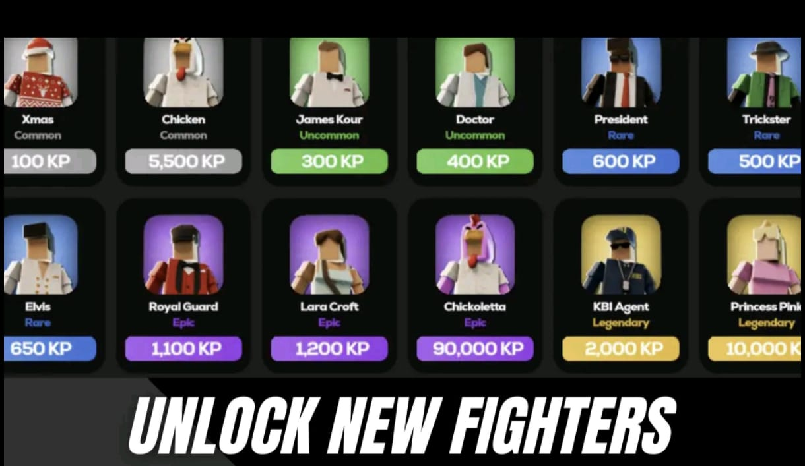
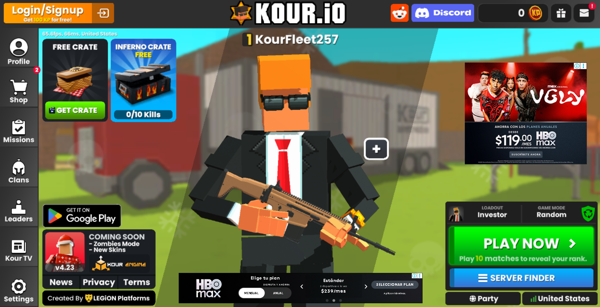
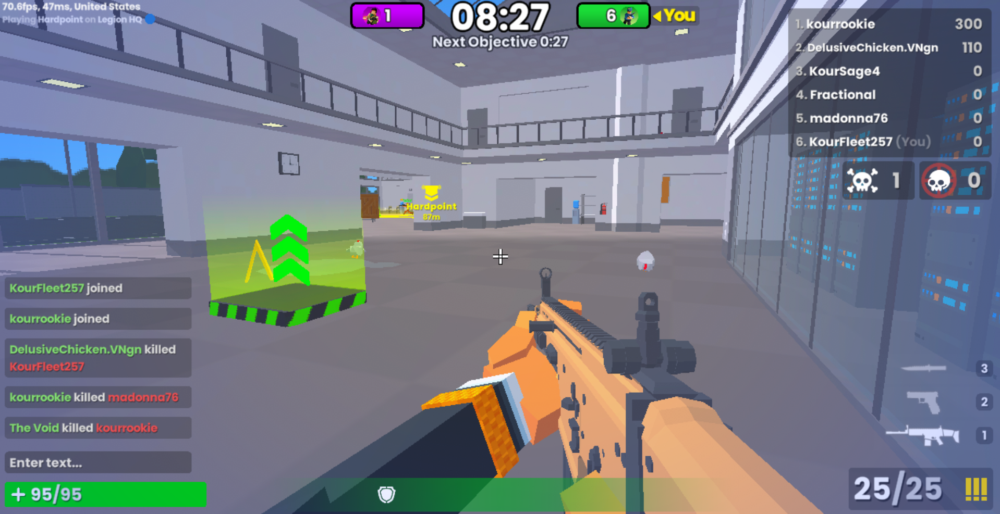

¿Qué es Kour.io?

Kour.io es un videojuego de disparos en primera persona (FPS) multijugador gratuito que se juega directamente en el navegador. Su estilo combina bloques simples con una jugabilidad rápida y fluida centrada en parkour, reflejos y trabajo en equipo.
Características principales

- Combates intensos con armas modernas y físicas ágiles.
- Modos como Free for All, Team Deathmatch y Capture Point.
- Desbloquea personajes, trajes y aspectos usando puntos KP.
- Soporte PWA: esta página funciona offline y muestra notificaciones locales.
Experimenta la acción

Domina el movimiento, deslízate, encadena saltos y aprovecha el ritmo del parkour para superar a tus oponentes. Kour.io premia la velocidad, la puntería y la coordinación.